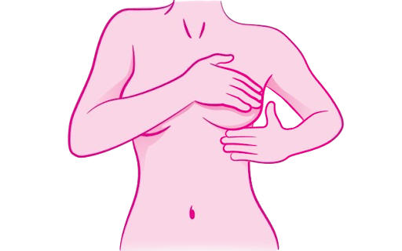

Quais os sinais?

Alterações na pele da mama:
Vermelhidão, inchaço, retração (pele afundada) ou aspecto semelhante à casca de laranja (peau d'orange).
Mudanças no mamilo
Inversão recente do mamilo (mamilo voltado para dentro), dor, descamação, crostas ou feridas que não cicatrizam.
Secreção mamilar
Saída espontânea de líquido por um dos mamilos, especialmente se for transparente, amarelado ou contiver sangue.
Alteração na forma ou tamanho
Mudança recente no contorno, volume ou assimetria entre as mamas.
Inchaço contínuo
Inchaço parcial ou total de uma das mamas, mesmo sem um nódulo aparente.
Nódulos na axila ou pescoço
Aumento e enrijecimento dos gânglios linfáticos (ínguas) nessas regiões.